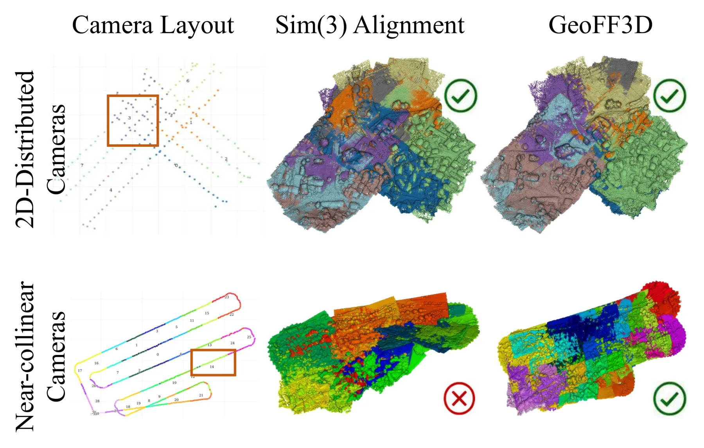
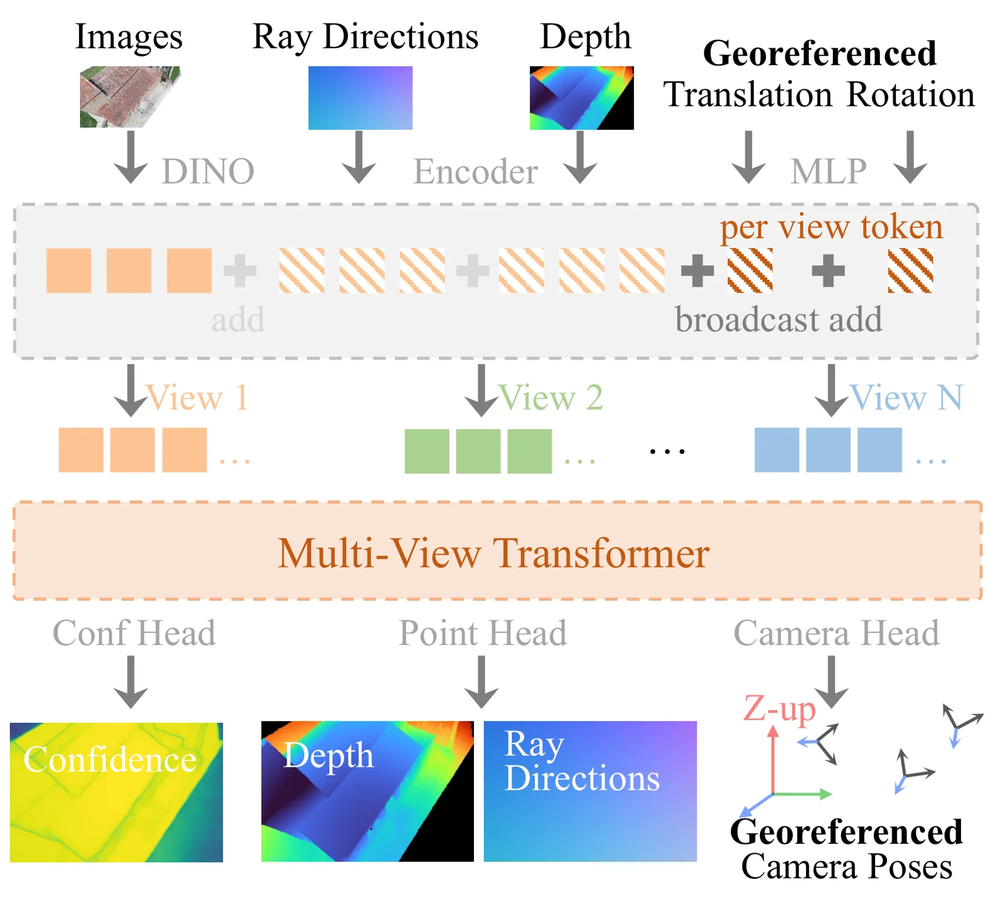
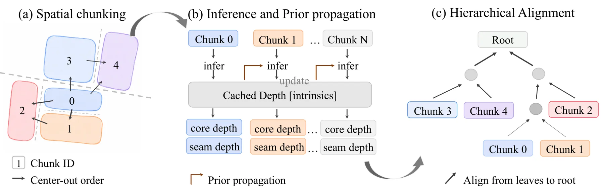

GeoFF3D：面向大规模无人机测绘的坐标锚定前馈重建
GeoFF3D: Coordinate-Anchored Feed-Forward Reconstruction for Large-Scale UAV Mapping
把绝对坐标、重力方向和局部前馈几何预测组合成可扩展的 UAV 大场景重建流水线。
9 aerial blocks · F@5
long sequence · F@5
images · ~5 min
作者、单位与技术谱系 · Research context
研究脉络
- 团队前作：UAVFF3D（2026）[UAVFF3D]
- 方法上游：feed-forward 3D reconstruction[Related Work]
- 本篇推进：GeoFF3D[GeoFF3D]
作者、单位和合作网络只展示可由论文、官方主页或公开代码直接支持的关系；导师/师生关系没有足够证据时不补写。研究脉络中的“团队前作 → 方法上游 → 本篇推进”是基于引用与同作者作品的有来源推断。

动机与问题Motivation
动机与问题
常规前馈重建通常只在有限视图和局部归一化坐标中恢复相机与几何，难以直接扩展到大规模 UAV 测绘。对近共线航迹使用全 Sim(3) 后处理还可能倾斜重建结果，破坏重力方向和垂直结构。
方法Method
方法总览
模型输入图像、地理配准相机平移以及可选深度/几何先验，输出相机位姿和稠密 point map。SLRF 按相机地面足迹构造重叠 core/seam views，从场景中心向外推理并传播共享视图先验，最后用 gravity-preserving alignment 自叶到根合并。
关键技术细节
坐标锚定模型用世界坐标和重力约束建立 metric Z-up 预测，并用 world、pose、gravity 等损失训练。SLRF 以 footprint-guided spatial chunking 替代单纯时间顺序切块，聚合时比较 GA-Sim/GA-Rigid 等重力保持对齐策略，并允许替换不同 bounded-view predictor。

实验Experiments
实验设置
论文在 UseGeo、UAVFF3D-Real、UAVScenes 和 NPU-DroneMap 四类 UAV 数据上评估，其中九个有稠密参考的航测块用于定量比较，UAVScenes 用于长序列测试，NPU-DroneMap 的 12 个序列中选 11 个作跨数据集定性泛化。指标包括 Accuracy、Completeness、F@1、F@5、ATE、峰值显存和运行时间，对照包括 VGGT + SLRF、Pi3X + SLRF 以及 SLAM/streaming baseline。
实验数字与比较
在九个航测块上，GeoFF3D 的平均 F@5 为 0.877，高于 Pi3X + SLRF 的 0.829；在长 UAVScenes 序列上，F@5 为 0.848，高于 Pi3X + SLRF 的 0.687 和最强 SLAM/streaming baseline 的 0.451。效率方面，论文报告 2,000 张图像约 5 分钟完成，UAVScenes Town01 约使用 16 GiB GPU memory；以上数字均来自官方 arXiv HTML 的摘要、实验段落和图表说明。
消融/失败边界
坐标锚定模型的消融明确移除 world/pose 损失或 gravity 损失，SLRF 消融则比较 temporal-sequential 与 footprint-hierarchical、不同对齐器和 prior propagation，说明性能来自模型与系统两部分的共同作用。论文指出全 Sim(3) 在近共线相机布局上可能产生倾斜，NPU-DroneMap 没有稠密参考只能作定性评估；各模块的逐项数值需以表 3–6 的完整表格进一步核验。
局限与迁移Limitations & Transfer
局限与待核验
作者明确承认部分跨数据集场景没有完整 dense reference geometry，因此不能给出统一定量结论。待核验项包括不同 georeferenced translation 噪声、先验缺失、极端块重叠率和显存随块大小变化的实际曲线，以及与真正在线增量 SLAM 的公平吞吐/延迟比较。
与你研究路线的关系
可迁移模块是“绝对坐标/重力先验 → 局部几何预测 → 空间层级聚合”的组合，适合接入可靠状态估计中的先验质量建模和退化检测。下一步可在含 GNSS 失锁、相机平移噪声和近共线航迹的数据上做先验置信度门控，并比较 gravity-preserving alignment 与因子图后端在漂移、可观测性和故障恢复上的差异。
{kind=link}

{kind=link}
